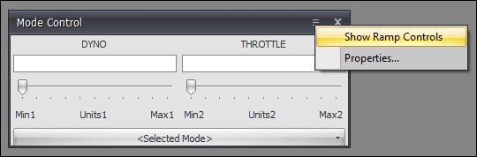
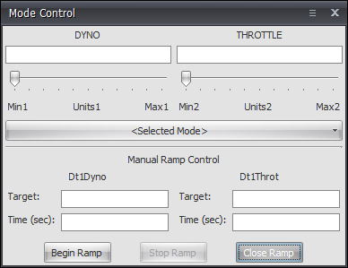
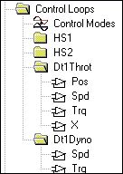
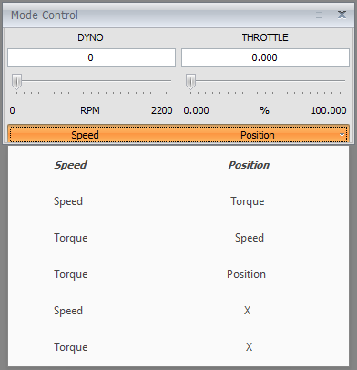
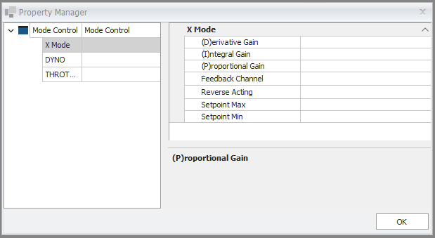
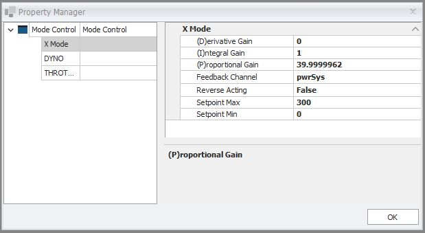

iTest User's Guide
The Mode Control dialog is the primary operator interface for switching control modes and manually changing setpoints. This dialog is a floating dialog on top of AutomationPanel's main window. It can be accessed in AutomationPanel by selecting Tools > Mode Control.... iTest Console has a similar dialog. For more information regarding iTest Console, refer to the PID Control Box documentation.
The Mode Control dialog can be configured using AutomationPanel or Test Manager. The powertek.ini settings that affect the function and appearance of the Mode Control dialog are listed below. Descriptions of these powertek.ini settings can be found in the Powertek.ini Settings section.
In addition, there are several Softpanel mailslot messages that can be used to configure the appearance and behavior of the PID Control Box during runtime. The following table describes the mailslot messages:
Mailslot Messages
| Mailslot Message | Description |
| $SHOWPIDCONTROL | Shows the PID Control dialog. |
| $HIDEPIDCONTROL | Hides the PID Control (can be restored via the menu) |
| $RAMP | This one brings up the manual ramp interface on the PID control box. |
| $RAMPOFF | Turns off the manual ramp interface. |
| $AUTO | Disables the PID Control dialog box. |
| $MANUAL | Re-enables the PID Control dialog box. |
The Mode Control dialog's drop-down menu is populated from the mode.lst file, and this file is modified using the Control Mode editor found in Test Manager or SolutionBuilder.
To configure the Mode Control dialog in AutomationPanel, do the following:
Mode Control Properties
| Property | Description |
| X Mode | |
|---|---|
| (D)erivative Gain | The derivative gain value. |
| (I)ntegral Gain | The integral gain value. |
| (P)roptional Gain | The proportional gain value. |
| Feedback Channel | Select the feedback channel associated with the control loop. The fields to the right of this option reflect the Low and High EU values for the selected database channel. Note that if the channel selected is not valid, then an error message will display. |
| Reverse Acting | Enable this option to ensure that the control output is adjusted in the correct direction when an increase in the control output causes a decrease in the feedback value (e.g., opening a chiller flow control valve decreases the temperature of the chilled fluid). |
| Setpoint Max | The control loop's maximum setpoint. |
| Setpoint Min | The control loop's minimum setpoint. |
| Dyno | |
| Line Rate | Sets the rate when controlling with the left and right arrow keys. |
| Page Rate | Sets the rate when using the page up/down buttons to change the setpoint. |
| Throttle | |
| Line Rate | Sets the rate when controlling with the left and right arrow keys. |
| Page Rate | Sets the rate when using the page up/down buttons to change the setpoint. |
In AutomationPanel, you can show the manual ramp controls using the Mode Control dialog. To display the manual ramp controls, click the hamburger icon in the Mode Control dialog then select Show Ramp Controls. The Mode Control dialog expands to display the manual ramp controls.
Show Ramp Controls

Manual Ramp Controls

Use the descriptions provided in the table below to configure the ramp controls.
Manual Ramp Controls Descriptions
| Control | Description |
| Target | The target value. |
| Time (sec) | The amount of time to reach the target value before switching controls. |
| Begin Ramp | Starts the ramp. |
| Stop Ramp | Stops the ramp. |
| Close Ramp | Closes the manual ramp controls. |
To configure the Mode Control dialog in Test Manager, do the following:
Mode Control Properties
| Powertek.ini Entry | Description |
| HS1Label | Label for PID Left Mode Control. |
| HS2Label | Label for PID Right Mode Control. |
| PidControlLoopGroup1Name | PID group to use for the left side of the Mode Control dialog. |
| PidControlLoopGroup2Name | PID Group to use for the right side of the Mode Control dialog. |
| InternalPids | Enable Mode Control combo box. |
| LastModeHS1 | Initial PID to start for PID Group HS1. |
| LastModeHS2 | Initial PID to start for PID Group HS2. |
| TemplateCommandVisibility | Enable the Mode Control dialog. |
| DefaultPIDGroup | Name of the PID group to apply at startup. |
| StartPids | Enable PIDs at startup. |
| PIDGlobalGainChan | Name of a channel that contains the global gain value for multiplying PID coefficients. |
| ReportPidModeSwitchErrors | Report invalid mode pair messages. |
The mode.lst file is configured using the Control Modes editor in Test Manager or SolutionBuilder. For more information on how to configure the mode.lst file, refer to the following documents:
The standard modes for dyno/throttle modules are:
Spd/Pos Spd/Trq Trq/Pos Trq/Spd
There is also a Runtime Configurable mode in which the user can select the feedback channel for the throttle PID. When this is utilized, the mode set will change to the following, for example:
Spd/Pos Spd/Trq Spd/X Trq/Pos Trq/Spd Trq/X
The X loop is added to the throttle loop group and the mode list is extended to provide 2 new mode pairs, as shown in the following screenshots:
X Mode

Control Modes
The Mode Control dialog will have new modes available in the mode list, as shown below:
Select Mode

The Mode Control dialog will have a set of configurable properties (detailed above), accessed via the Property Manager as shown below:
X Mode Property Manager

The X mode PID mode is identified by a powertek.ini setting, as shown below:
PidXMode=X.Dt1Throt
If this setting is not present in the powertek.ini or has an empty value, the X Mode properties will not be available in the Property Manager dialog.
If an X loop is selected (from Mode Control), the X Mode properties will be visible but editing the configuration will not be possible.
Using the Property Manager, the user picks the feedback value, the loop direction, the PID gains, and the setpoint limits. If the channel has been used in X Mode before, the values are loaded from the new file xmode.lst. If not, default PID values and loop direction are used and the min and max setpoint values are loaded from the feedback channel’s min and max EU values.
X Mode Configuration

Modifying the properties writes the changes to the mode file defined as the X mode file in powertek.ini, and writes the new values to the file xmode.lst. In addition, you can hook a procedure to get called when changes to the X Mode properties are made. Set the powertek.ini setting PIDXModeSaveProcedure to the name of the procedure you would like to call.